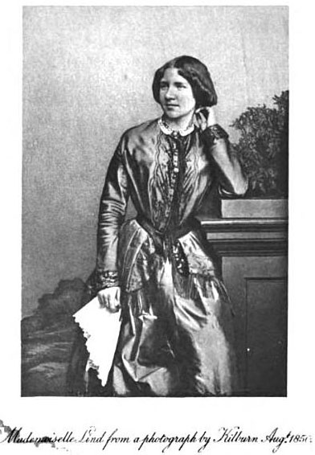

Collective Biographies of Women
Alison Booth
-
Joan of Arc as Victorian heroine: as if praying before battle with cross-like sword, crinoline and corset beneath armor.
-
 Queen Elizabeth I tends to get better or worse press in comparison to her Catholic sister Mary or her captive, Mary Queen of Scots; Victorians begin to praise a great monarch who inspired a golden age.
Queen Elizabeth I tends to get better or worse press in comparison to her Catholic sister Mary or her captive, Mary Queen of Scots; Victorians begin to praise a great monarch who inspired a golden age. -
Lady Jane Grey, queen regnant of England for less than two weeks, too little time to become a blameworthy ruling woman.
-
Pocahontas alone represents Native Americans in these books but she joins others as a leader's daughter, a Christian convert, and a rescuer of a man.
-
Lady Rachel Russell, now admired for letters and memoirs, served as clerk in her husband's trial for treason against Charles II; Victorians admired her wifely heroism.
-
Hannah More, bluestocking and eminent conservative educator, by any lights was a model for nineteenth-century women writers.
-
Caroline Herschel, astronomer, in some ways shares features with Mary Somerville.
-
Madame Roland in hopeful times; a heroine of the French Revolution admired in England for her sufferings in prison and the respect she earned from learned men.
-
Madame de Staël, preeminent woman writer, heroine of the French Revolution.
-
Frances Trollope, prolific novelist and travel writer, was the venturesome provider for her husband and sons, including Anthony, also a novelist.
-
 Mary Somerville, mathematician, astronomer, and renowned science writer, one of the first women elected to the Royal Astronomical Society.
Mary Somerville, mathematician, astronomer, and renowned science writer, one of the first women elected to the Royal Astronomical Society. -
Elizabeth Fry, Quaker minister and prison reformer, defined the role of female philanthropist in the early nineteenth century.
-
Ann Hasseltine Judson, the most famous of the first American women missionaries to the "East," an eloquent writer and martyr.
-
 Grace Darling, lighthouse keeper's daughter, became a celebrity for rescuing survivors of a shipwreck.
Grace Darling, lighthouse keeper's daughter, became a celebrity for rescuing survivors of a shipwreck. -
 Charlotte Brontë, the famous novelist, became a Victorian ideal of self-sacrificing yet triumphant feminine genius, in contrast with sister Emily.
Charlotte Brontë, the famous novelist, became a Victorian ideal of self-sacrificing yet triumphant feminine genius, in contrast with sister Emily. -
Queen Victoria reigns over Victorian collections of women's lives much as she represented an empire and an era.
-
Florence Nightingale defined the nursing profession and captured the public imagination.
-
Jenny Lind, world-famous as "the Swedish Nightingale," opera singer who rose from the people.
-
 Frances Power Cobbe, incisive social critic, forerunner of lesbian feminist animal-rights activists today.
Frances Power Cobbe, incisive social critic, forerunner of lesbian feminist animal-rights activists today. -
Adelaide Procter, renowned Victorian poet, daughter of the writer "Barry Cornwall"; a Catholic convert who died young.
-
 Sister Dora emulated Florence Nightingale as a nurse-administrator but in an industrial hospital near Birmingham.
Sister Dora emulated Florence Nightingale as a nurse-administrator but in an industrial hospital near Birmingham.